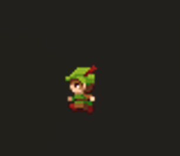
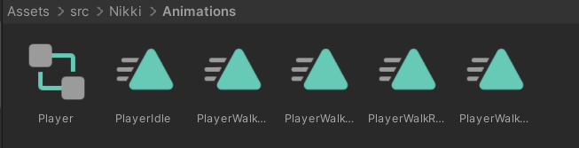
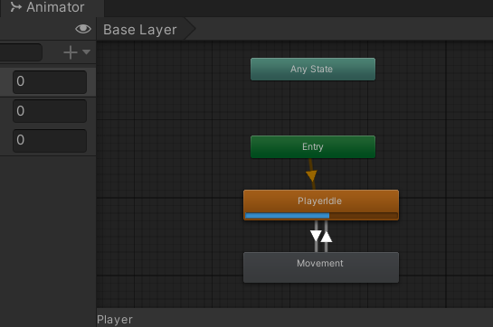
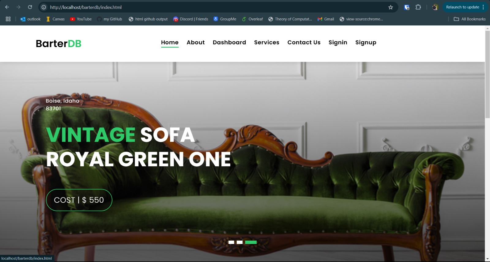
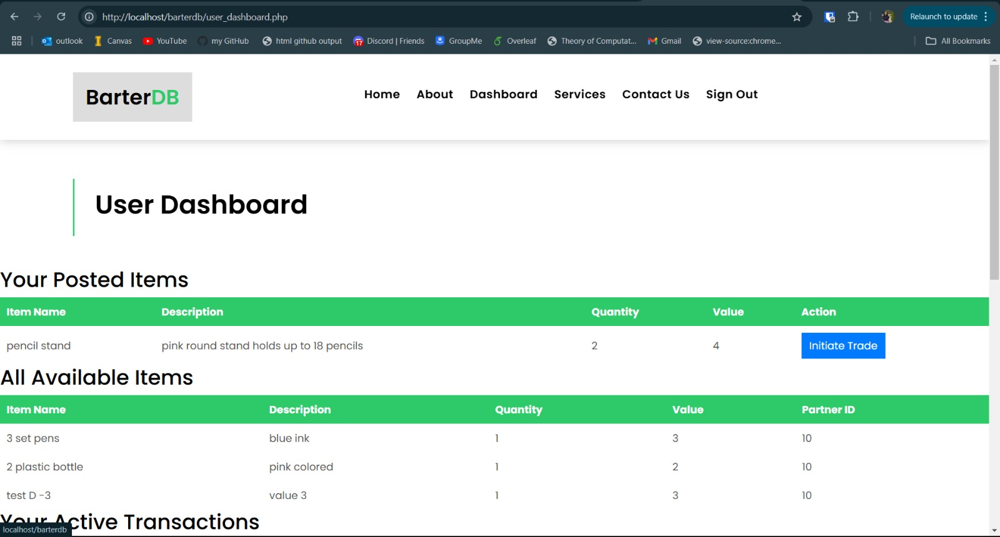
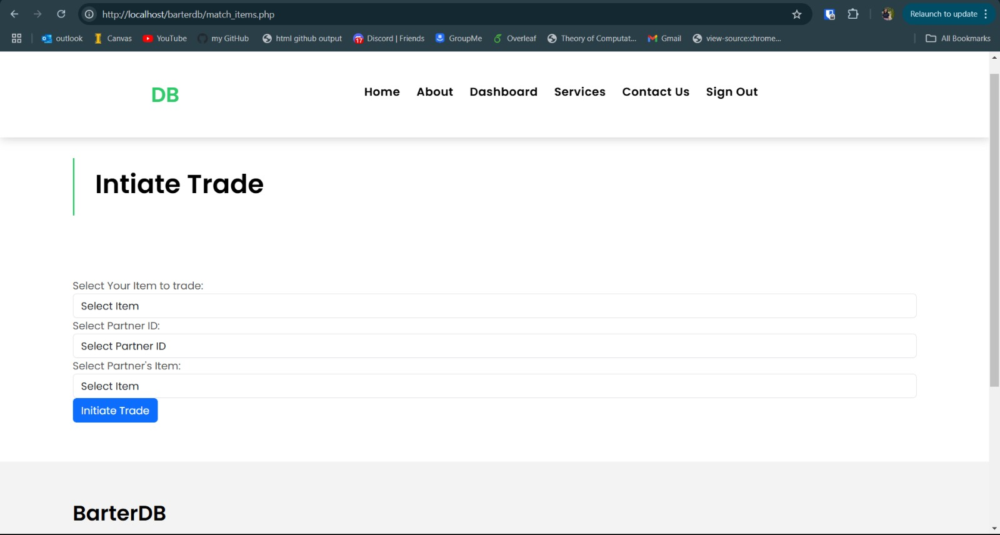

My Portfolio
Education and Skills
At the University of Idaho, I have completed coursework that has provided me with a solid foundation in computer science principles. I am proficient in programming languages such as Python, C/C++, SML, Java, ML, Prolog, HTML, and CSS. My skills extend to solving algorithms and working with various software tools, including Microsoft Word and Outlook. Additionally, I have knowledge of Unix, Linux- Ubuntu, and software development concepts related to OS/Unix history. I am also familiar with JavaScript and machine languages, which complements my technical skill set.
Professional Experience

In my role with Athletic Video Support, I have been responsible for filming and editing football practices, games, and special events. This position has honed my skills in video production, from capturing high-quality footage to assisting with equipment setup and takedown. Traveling with the football team for away games has provided me with valuable experience in managing video operations in diverse environments. This role has not only developed my technical abilities but also enhanced my teamwork and organizational skills.
Projects
Player Controller / Version Control Manager in developing a 2D Video Game (Spring 2024)
Last semester, I had the opportunity to work on a group project where my teammates and I developed a 2D video game as part of one of our classes. My primary responsibility was building the core functionality of the game and ensuring that it could run smoothly on various platforms, including Android and iOS. We used Unity as our development platform and coded in C#, which allowed us to create a cross-platform experience. This project not only enhanced my skills in game development but also taught me the importance of collaboration and problem-solving in a team setting.

In this project, I was also responsible for creating the player characters and their prefabs using Unity and C#. My role involved designing and implementing the player’s functionality and ensuring that these elements were compatible with both Android and iOS platforms. This experience not only enhanced my skills in game development but also provided me with valuable insights into cross-platform compatibility and collaborative project work. Looking ahead, I am excited to apply my skills to new challenges, whether in software development, game design, or mobile application development, and to continue contributing to impactful projects in the tech industry.
GitHub Repo: https://github.com/skgtheking/383--404
Designed and developed the BarterDB website (Fall 2024)
 I successfully designed and developed an anonymous barter system, "BarterDB," to facilitate secure and anonymous item exchanges between users. The system incorporates advanced features to ensure privacy, fairness, and seamless trading.


Key Highlights:
Design: Created an efficient database schema using MySQL, including tables for users, items, transactions, equivalence values, and contact messages. Designed a flexible equivalence matching algorithm to enable fair trades.
Development: Built a responsive and user-friendly web interface using HTML, CSS, JavaScript, and PHP for back-end logic. Integrated secure user authentication and authorization mechanisms.
Features: Developed user and admin dashboards with role-specific functionalities:
Users: Post items, track active/completed transactions, and manage listings.
Admins: Manage users (suspend/delete), track all transactions, and define equivalence values for items.
Secure Exchange: Implemented a secure trade initiation process using a 16-digit hash code to ensure anonymity and security.
Enhancements: Designed the system to support anonymous multi-user bartering scenarios, accommodating future partner-based trade exchanges.
Tools and Technologies Used:
Database: MySQL for schema design and data management.
Server & Backend: XAMPP for local server setup, PHP for backend scripting.
Front-end: HTML, CSS, JavaScript for responsive UI design.
Visualization & Documentation: Lucidchart for ER diagrams, Overleaf for project reports, Microsoft Power BI for data insights.
Version Control: GitHub for code collaboration and project versioning.
Outcome:
This project provided a comprehensive understanding of database design, secure transaction algorithms, and full-stack development. By successfully implementing this system, I demonstrated my ability to integrate multiple tools and technologies to solve real-world problems effectively.
GitHub Repository: https://github.com/nikki44k/BarterDB
WebPage Link: https://nikki44k.github.io/BarterDB/
Moving forward this semseter, I'm eager to take on more challenging projects that push the boundaries of my skills. Whether it's in software development, game design, or mobile app development, I aim to contribute to projects that have real-world impact. I look forward to expanding my expertise, particularly in cross-platform development, and applying my knowledge to create innovative, efficient, and user-friendly applications.
Volunteer Experience
My involvement in volunteering has been a significant part of my university experience. As a volunteer at the Cruise the World Event, I collaborated with international students to promote cultural awareness and inclusivity. I played a key role in event planning, setting up booths, and organizing activities, which contributed to the event's success. Additionally, I served as a volunteer speaker for the INTR 101 course, where I shared my experiences as an international student and provided guidance on academic and personal growth. These experiences have allowed me to develop strong communication and leadership skills while making a positive impact on my community.